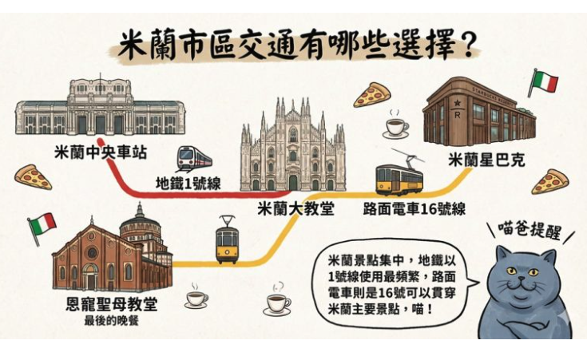

了解狀況
先聽取需求、整理問題，確認您在意的重點。
OUR SERVICE
針對您的狀況提供清楚說明與服務流程。以下內容可依實際專業項目與服務方式更新。
先聽取需求、整理問題，確認您在意的重點。
以易懂的方式說明可行方案、流程與注意事項。
依雙方確認的方案安排服務，過程中保持溝通。
提供後續照護資訊，陪伴您掌握恢復與保養方式。
PRICING
費用依實際需求與服務內容確認；預約前可先聯繫詢問。
初步了解
NT$ 待填
了解需求、說明流程與適合的服務選項。
詢問此項服務 →依需求安排
NT$ 待填 起
依個別狀況與服務範圍報價，開始前先確認內容。
索取服務報價 →持續照護
NT$ 待填
依追蹤頻率與照護內容安排，可洽詢方案細節。
了解追蹤方案 →＊請填入正式服務項目與價格；若費用因個案不同，請清楚標示計價方式。
讓每一次服務
都建立在理解與信任上。
OUR STORY
我們成立於【成立年份】，起心動念是希望讓需要協助的人，能更容易找到值得信賴的資訊與服務。團隊重視專業、溝通與尊重，期待陪伴每位來訪者找到適合自己的步調。
請在此補上品牌／機構的真實故事、專業背景、團隊資格及服務理念。
認識我們 ↗SELECTED WORK
以真實案例分享服務過程。公開前請取得當事人同意並妥善保護個人資料。

以資訊圖整理米蘭主要景點與地鐵、路面電車路線，方便快速掌握市區交通選擇。
補充服務內容、遇到的挑戰，以及如何與服務對象共同確認方向。
分享講座、合作或其他成果，放上照片與更多內容的連結。
HEALTH & KNOWLEDGE
以可靠來源與易懂文字，分享日常保健與常見問題。
衛教內容僅供一般資訊參考，不能取代個人診斷或專業醫療建議；若有急迫或持續不適，請尋求合格醫療專業人員協助。